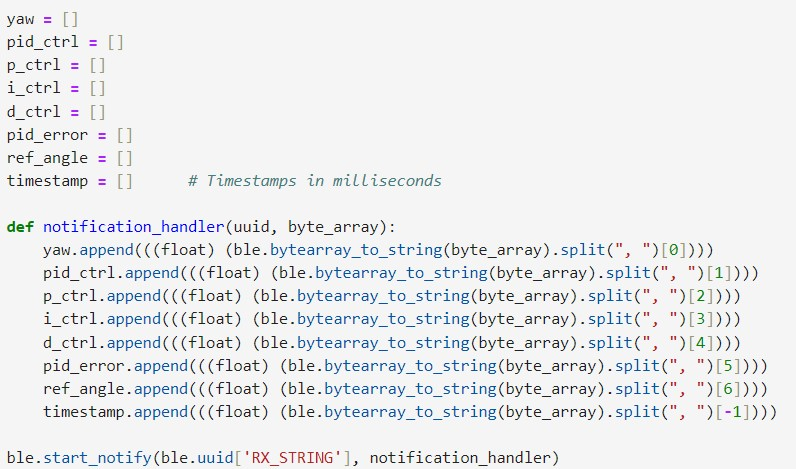
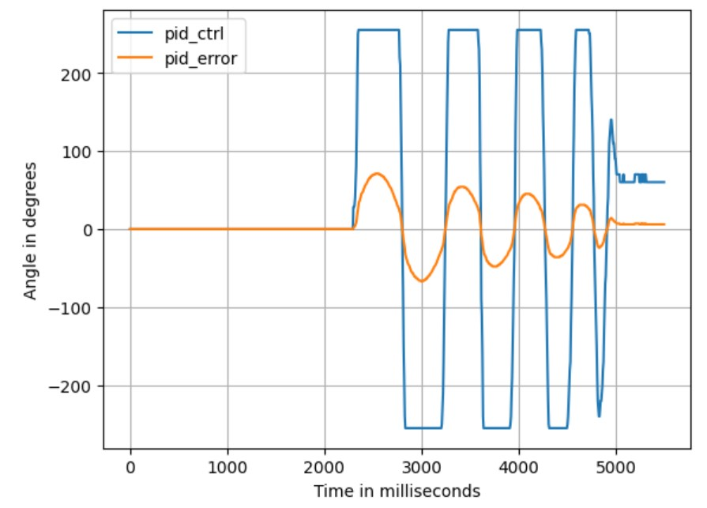
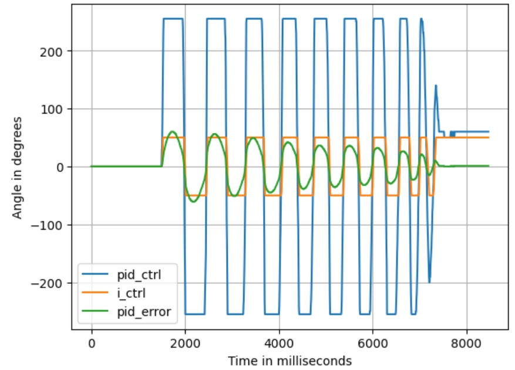
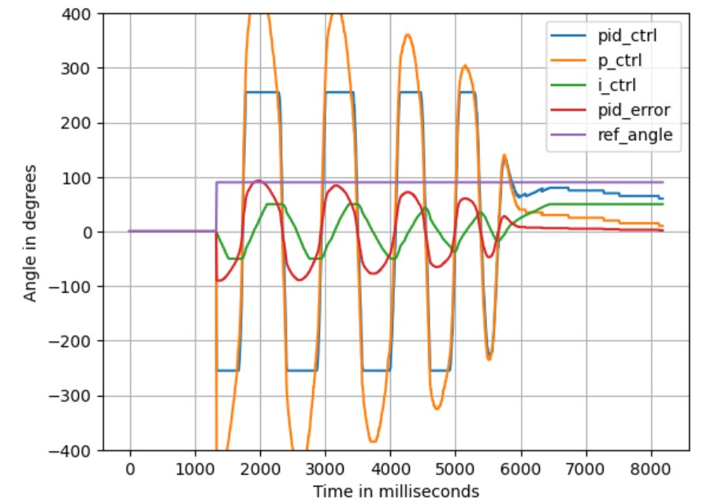
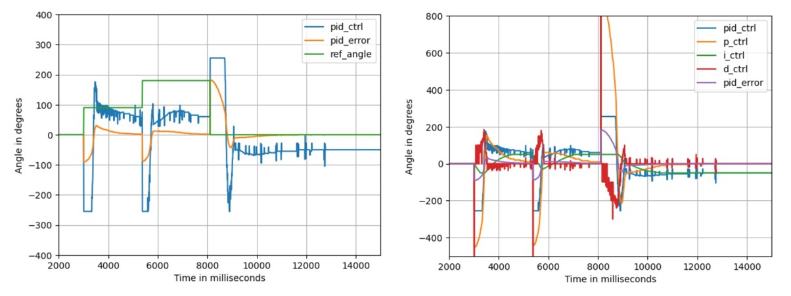

Objective
The aim of this lab is to implement the PID controller to do stationary (in-place) orientation control for the robot.
Prelab
A well-designed mechanism for storing and transmitting data is crucial for debugging for this lab. Since the important
functionalities have been encapsulated into functions in the previous lab, integrating this lab was relatively straightforward.
The START_IMU_PID command, shown in the code snippet below, raises a flag that triggers a condition statement in the main loop. It also resets
some intermediate variables, allowing for multiple tests to be conducted conveniently without the need to reconnect the Bluetooth or restart the robot.
The content of the main loop is shown below. When the start flag for orientation control is detected and the robot has
not been running for more than 20 seconds, the main loop instantiates the calculation of the angle, executes the PID
control, controls the motors accordingly, and stores the relevant data using the data_save() function.
The overall process remains largely the same: first, connect to the robot via BLE, then send the START_IMU_PID
command. After the PID controller is either stopped by START_IMU_PID command or automatically times out after 20 seconds, the
GET_IMU_PID_INFO command is sent to transmit the stored data to the laptop end.
A notification handler was defined as following, to parse the message string and store the data into seperate arrays:

In addition to the KP/KI/KD_SET commands added in lab 5, a REF_ANGLE_SET command was included here, which
allows for the direct modification of the set point variable via Bluetooth connection. The code is as follows:
Lab Tasks
Programming Implementation & PID Input Signal Consideration
Gyroscope & ToF PID Control Integration
As shown in the above main code snippet, the approach to integrating the PID controls for IMU and ToF in this lab
was to place the two PID controllers in two separate conditional cases that would not be executed simultaneously. This setup
is due to the requirement of the lab that only one PID controller would run at a time.
If simultaneous PID controls for both distance and orientation are desired, one feasible way is to set up a total PID control variable,
run the IMU and ToF PID controls in parallel, and add or subtract the outputs of them to this total variable to control
the motor according to both PID controllers simultaneously.
BLE Command Processing During PID Control
By putting the PID controls in the if-else statement in the main loop, the code was designed to maintain the continuous
sending and processing of Bluetooth commands even while the PID controller is operating. This functionality enables
quick tuning of the PID gains and allows for changing the setpoint in real time while the robot is in motion. Such
flexibility is crucial, especially for scenarios where the setpoint needs to be adjusted dynamically for stunts or
navigation purposes.
IMU Sensor Limitation
According to the IMU example code, the default maximum rotational velocity that the gyroscope can read is 255 degrees
per second. This means that if the robot completes three-quarters of a circle or more within one second, the IMU's
reading will reach its upper bound, resulting in inaccurate measurements. Therefore, the following code was introduced
to be executed during setup for adjusting the gyro's maximum reading range to 1000 degrees per second.
IMU Sensor Bias
One notable thing to mention is that the IMU gyroscope reading has a bias. Even when stationary, due to the non-zero
mean noise in the environment, the gyro reading is not always 0. As a result, when integrated over time, the yaw value
calculated using the gyro gradually drifts. In this case, the robot may think it is already at a non-zero position, but
in reality, it is still at 0 degrees. This means that the robot's set point is biased, so when it tries to move to a
specified set point, it cannot perfectly reach the desired angle.
Since the noise in the gyro reading is related to the environmental conditions, one solution is to let the robot remain
stationary for a while when the PID controller starts. This allows taking a few samples of the static gyro readings and
measuring an average bias. Then, subtracting this value from each gyro reading helped alleviate the bias phenomenon in a
short period of time. The code snippet shown below is integrated into the START_IMU_PID command case.
PID Controller
The implementation of the PID control function is shown in the following code snippet:
Proportional Term
First, the Ki and Kd were set to zero and the effect of Kp was tested. In the video below,
the set point was set to 0 and the value of Kp was 10. After the robot was lightly kicked to move its orientation, it attempted
to return to the original orientation but ended up continuously overshooting and oscillating.
Range Discussion:If the angle from the set point is not particularly large, the oscillation would eventually stop due to friction. The PID control data for this scenario is shown in the figure below. It can be observed that after the robot stops moving, there is still a steady-state error between the yaw value and the set point. This is because the error corresponds to a PID value that is within the dead zone of the motors, which is not large enough to overcome the friction and rotate the robot further. To eliminate this steady-state error, the Integral Controller must be introduced.
A maximum orientation error of 360 degrees would be enough for now, whereas the maximum PID control value is 255. If calculated proportionally, the value of Kp should be 255/360, approximately 0.71. However, to increase the car's rotation speed, Kp can be raised, as long as the PID control value is clamped within the range of ±255.

Integral Term
Ki was then set to nonzero values for getting rid of the steady-state error.
Additional Task: Wind-Up ProtectionWith the Integral Controller working together with the Proportional Controller, the steady-state error can be eliminated, as shown in the figure below.
Windup protection is crucial for the integral term. The purpose of the integral term is to eliminate steady-state errors, so its contribution to the PID control value should not be excessively large.
However, if the robot is held stationary for any reason, leading to a buildup of steady-state error, the integral term can become very large. When the robot starts moving again, the integral term can drive the robot too aggressively, causing it to move at full speed and taking a long time to eliminate the previously accumulated error.
By clamping the value of the integral term and limiting its range (as demonstrated in lines 17 and 18 of the PID control code above), the value of the integral term can be kept within a reasonable range at all times.

However, in the figure above, it was observed that the integral control term was always at either -50 or 50, with very few instances of intermediate values. This is not the expected behavior of the integral controller. It was later discovered that this was because the limits of the wind-up were set too small, specifically in the range of only ±500. This range would be filled within just three or four loops due to the fast rotation speed of the robot and the ~10ms dt (which is the main loop interval between iterations). This limitation made it impossible for the wind-up to effectively reflect the historical state of the robot.
The wind-up limits were then set from ±500 to ±10000, and Ki was adjusted to 0.005 to ensure the contribution of the integral term to the final PID control value is kept within 50. The result is shown in the figure below, where the integral term clearly demonstrated a more accurate control response.

Derivative Term
In order to maintain the highspeed while eliminating overshooting caused by high Kp values, the Derivative Controller is
necessary. With the parameter combination Kp=5, Ki=0.005, Kd=300, the robot successfully achieved static orientation PID
control. As shown in the video below, starting from 0 degrees, the set points were sequentially set to 90 degrees, 180
degrees, and back to 0 degrees. The robot was able to quickly rotate to the specified angles in a short period of time,
with a slight, promptly corrected steady-state error.
The PID control data for this scenario is shown in the figure below. It can be observed how the pid_error quickly
approached the set point under the combined influence of the P term and D term, overshooting slightly, and then
gradually converging towards the target angle under the influence of the I term.

It is worth noting that there are many spikes in the PID control value, which originate from the Derivative term. The
noise in the gyro readings during the robot's operation can be significant, and the derivative form is sensitive to this kind of
noise. A low-pass filter could be used to mitigate or eliminate this noise, but since the current results are already satisfactory,
no filtering was applied here. Additionally, at the moment of set point change, a very large spike can be seen in
the D term, which is due to the derivative kick. However, since the total PID control value has been clamped, this spike
does not cause any damage.
Discussion & Conclusion
This lab deepened my understanding of PID control and its application in robotics, especially in addressing Integral Controller wind-up issues. I also gained familiarity with the characteristics of the IMU sensor, including its reading bias issue and range limitations.
References
Lab tutorials
Phenomenological Introduction to PID controllers